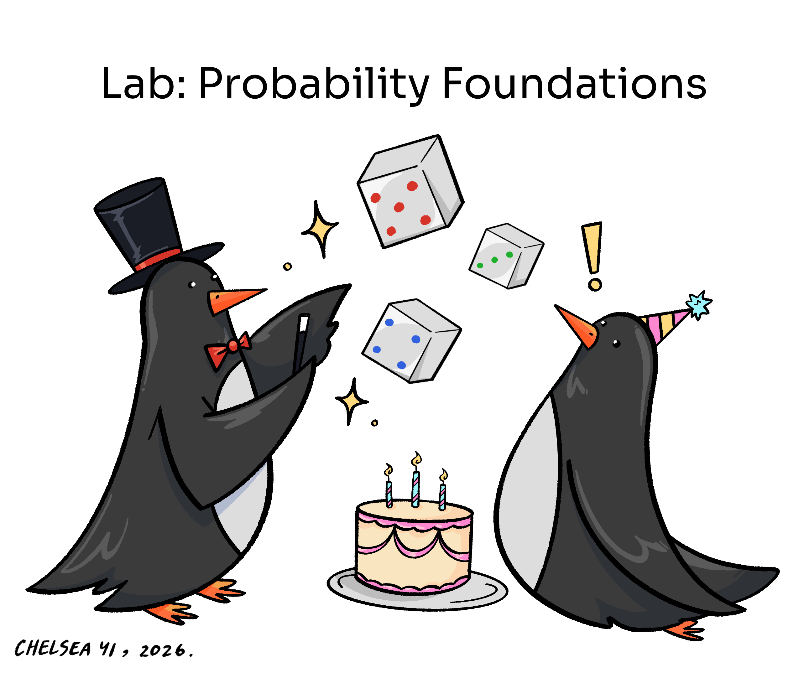

my_numbers <- seq(from = 1, by = 1, to = 10)
my_logicals <- c(FALSE, TRUE, TRUE, FALSE, TRUE)Lab 5: Probability Foundations

Answer the following questions in a Quarto document, saved as lab-5.qmd (note that your file name is not the same as the title of your document). Render the completed document as a PDF, and turn it into Gradescope.
Question 1
This lab will focus on questions involving randomness. Write a line of code that will ensure that you receive the same output each time you render your Quarto document. (Hint: did you read the tutorial for “Intro to Probability”?)
Question 2
There are many times in statistics when computing true probabilities is hard, but simulating is easy (and gets you close enough). We’re going to practice that here. Flip to the backside of Worksheet: Probability Foundations. Instead of explicitly calculating the probabilities as you did in class, you’re going to simulate rolls to approximate the true probabilities.
part a
Create a vector which contains the spots on the 7-sided die as mentioned on the second page of the worksheet and save it into the object seven_sided. HOWEVER do not write c(0, 1, 2, 3, 4, 5, 6) to create this vector. Use a more succinct approach. (Hint: did you read the “Intro to Probability” tutorial?)
part b
Create a vector which contains the results of 3,000 rolls of the seven_sided die, and save it into the object q2_rolls.
part c
Calculate the approximate probabilities of each of the following events using q2_rolls and the appropriate comparison operators and/or logical operators. You don’t need to save the probabilities to variables, just have them printed to the screen. Hint: see the Data Wrangling Notes/Tutorial from last week.
For each event, you must show your code to receive credit.
subpart I: \(P(A)\)
subpart II: \(P(B)\)
subpart III: \(P(C)\)
subpart IV: \(P(B \cap C)\)
subpart V: \(P(A \cap B^C)\)
part d
Insert a Table into your Quarto document using the Table button in your Editor. Recreate and fill out the table below.
In the second column: write down the pen-and-paper answers you calculated on the worksheet.
In the third column: write the approximate probabilities of each event from part c. (You can round where necessary since we will be checking your answers via the code).
| Subpart | WS Calculation (Theoretical) | Lab Calculation (Simulation) |
|---|---|---|
| I | ||
| II | ||
| III | ||
| IV | ||
| V |
part e
Describe the results you see in the table. Do the values in columns two and three match up exactly? Should we expect them to? Write one or two sentences to answer these questions.
Question 3
Consider a random experiment in which we:
roll 2 six-sided dice
find the sum of the spots across both of the dice.
part a
Write R code to create a vector which contains 3,000 simulations of this experiment (so each element of the vector is a sum from two dice). Save the vector into sums.
- Hint 1: try simulating 3,000 rolls of each individual die first, then add those vectors together
- Hint 2: a more elegant approach uses the
replicatefunction taught in the “Computing Probabilities” notes…
part b
With your simulated rolls obtained in part a, approximate the probability of getting a sum of 8.
part c
With your simulated rolls obtained in part a, approximate the probability of getting a sum of less than or equal to 5.
part d
With your simulated rolls obtained in part a, approximate the probability of getting a sum that is less than 3 or greater than 7.
part e
With your simulated rolls obtained in part a, approximate the probability of getting a sum that is an odd number. Hint: use %in% somewhere in your code… possibly along with seq()!
Question 4
part a
Write R code to create a vector containing the integers 1, 2, 3, …, 3,000 and save it into the vector simulation_number.
part b
Write R code to create a vector containing 3,000 simulated rolls of a standard, six-sided die. Save the vector into an object called q4_rolls.
part c
Create a data frame called q4 with two columns: simulation_number and q4_rolls.
part d
Add a new column called less_than_3 to the q data frame that contains 3,000 elements that are either TRUE if a die roll from the q4_rolls is less than 3 or FALSE if the roll is 3 or greater. Save the new data frame back into the object q4. Hint: you’ll need mutate().
part e
Explore the cumulative sum function cumsum() in R. This function works on vectors, and therefore, can be used when mutating columns in a data frame. Copy these two lines into your code, and call cumsum() on each of these two vectors. Based on the results, describe what the function is doing in general, in a sentence.
part f
Add a new column to the q4 data frame called cumulative_proportion. It should contain the cumulative proportion of die rolls that are less than 3. That is, the proportion of all rolls up to and including the current roll that are less than 3.
For example, if our first 3 rolls are 1, 5, and 3, the cumulative proportions would be 1, 0.5, and 0.33 for those three rows. The rest of the entries should also follow the pattern.
Be sure that you actually changed the q4 variable!
part g
- Create a line plot using
ggplot()to visualize how the cumulative proportion changes as the simulation number increases. - Label your axes.
part h
The geom_hline() layer allows you to add a horizontal line on top of your visualization. Tack it onto the code of your previous plot to add a horizontal line which sits at the theoretical probability of rolling a number less than 3. Color it red.
part i
Describe the pattern in the line plot you see. How does it relate to theoretical probability of rolling a number less than 3? Use a sentence or two.
Question 5 (The birthday problem)
On the warm up sheet, we had the following multi-part problem:
- We have roughly 80 people in the classroom. What is the chancethat at least two people share a birthday? (Just the month and day, e.g. February 22).
- How many people would you need in the room before the chance that two people have the same birthday is more than 50%?
Explanation of the math, assuming 2 possible days (instead of 365)
Let’s think about it. Say we had only two days in which people could be born, maybe called “Oneday” (1) and “Twoday” (2). If we had one person, there would be two ways in which we could have a birthday. If we had two people, say their names were PP and MJ, then there would be 4 ways in which they could have birthdays: PP could be born on either Oneday or Twoday, and in each of those cases, MJ could be born on either of those days (so you could have the following assignments of days and people: PP-1, MJ-1 / PP-1, MJ-2 / PP-2, MJ-1 / PP-2, MJ-2 ). If you add another person, maybe JG, you now have 8 possible assignments of birthdays to people (\(2^3\)), since each of the 3 people could be born on any of the two days. Another way to think about this is that we have a box with 2 tickets marked “Oneday” and “Twoday”, and we sample 3 times with replacement from this box, so we have 8 possible samples of size 3 (PP-1, MJ-1, JG-1 / PP-1, MJ-1, JG-2 / PP-1, MJ -2, JG -1 and so on).Explanation of the math with 365 days
Now, this was easy to enumerate since we had only two possible days that people could be born, but it is the same idea with 365 days (let’s ignore leap years and twins etc, so anyone could be born on any of 365 days of the year, and we will assume that a person is equally likely to be born on any of the 365 days). So with one person, there are 365 possible birthdays. If we have two people, there are \(365^2\) possible ways they could have birthdays. With 2 people, it is easy to see how many days they could share a birthday, but let’s say we have \(k\) people. Now it is more complicated:
- First, let’s note that there are \(365^k\) possible assignments (or \(365^k\) possible samples when drawing \(k\) times with replacement from a box with 365 tickets).
- It is pretty hard to see how many ways they could share a birthday, since maybe PP and MJ share a birthday or MJ and JG share a birthday, or maybe all three of them share a birthday and so on.
- It is much easier to count the opposite (complement) scenario: that no one shares a birthday. Now this becomes like sampling from the birthday box without replacement. Once someone picks a birthday ticket, it doesn’t go back into the box.
- The first person has \(365\) birthdays to choose from out of a possible \(365\). The next person has only \(364/365\), and so on. The last (\(k^{\text{th}}\)) person has \(365-(k-1)\) birthdays to choose from out of the total of \(365\) days. We can write down the probability of no match in birthdays as:
\[ P(\text{no match}) = \frac{365}{365} \cdot \frac{364}{365} \cdot \frac{363}{365} \cdots \frac{365 - k + 1}{365}, \]
Then, by the complement rule (\(P(A) = 1-P(A^C)\)) the probability of at least one match is \(P(\text{at least one match}) = 1 - P(\text{no match})\).
In the steps below, we will use R to compute this probability for every \(k\) from 1 to 100, and then create a plot which will allow you to easily see the answer the questions “What’s the chance of two people in a room of size \(k\) sharing a birthday?” and “How many people do you need for the chances to be above 50%?”.
part a
Create a data.frame called birthdays with a single column named k containing the integers 1 through 100.
part b
Using mutate(), create a new column called prob in this data frame, where the entry for person \(k\) is the probability that they don’t share a birthday with any of the people numbered \(1, 2, \ldots, k-1\). Remember, the \(k^{\text{th}}\) person has \(365-(k-1)\) possible birthdays, out of \(365\), if their birthday is different from the other \(k-1\) people. For example, the first person (k=1) has \(365\) birthdays to choose from, so the value of prob for this row is \(\dfrac{365}{365} = 1\). Now, the second has only \(364\) days to choose from, so the value of prob for k=2 should be \(\dfrac{364}{365}\) and so on.
part c
Here is a new function: cumprod(), which stands for cumulative product. Try it on a short vector, for example:
cumprod(c(2, 3, 4))[1] 2 6 24Based on the output, describe in words what cumprod() does when a vector is input into it.
part d
Add two new columns to birthdays: - Call the first one prob_no_match_k. This will contain, for each row, the probability of no one in the rows up to and including that row sharing a birthday. - Then add a column called prob_match_k equal to 1 - prob_no_match_k. This will have the probability of at least two people out of \(k\) s sharing a birthday.
part e
Use ggplot() to plot prob_match_k against k. Add the horizontal line \(y=0.5\). Color this line red. Label your axes appropriately and give your plot a descriptive title.
part f
Use your plot, or other dplyr functions on your dataframe, to answer our original questions:
- What is the probability of at least two people in a class of 80 sharing a birthday?
- How many people do you need in the room before this probability is greater than 0.5?
WARNING: Does your rendered pdf have 30+ pages? (And do you want to get credit?)
If your final pdf is really long, you are probably printing an entire dataframe in one of your code cells. For example, a line that just says flights will print the entire flights dataframe (over 100,000 rows!). You don’t realize this, because RStudio is smart enough to hide most of the rows from your screen while you’re working. But when you render, it will obediently print every single row of the dataframe, giving you an unwieldy output.
To fix this, anytime you have a line that is just displaying a dataframe (e.g. just flights), change it to only show the first few rows by using either the head function, e.g. head(flights) or the tidyverse equivalent slice_head(flights, n = 10).
Last Question
Will you ensure that your submission to Gradescope…
- is a pdf generated from a qmd file
- your code is fully visible (not running off the page)
- follows formatting rules (here)
- and assigns each of the questions to all pages that show your work for that question?
(This one is easy! Just answer “yes” or “no”)